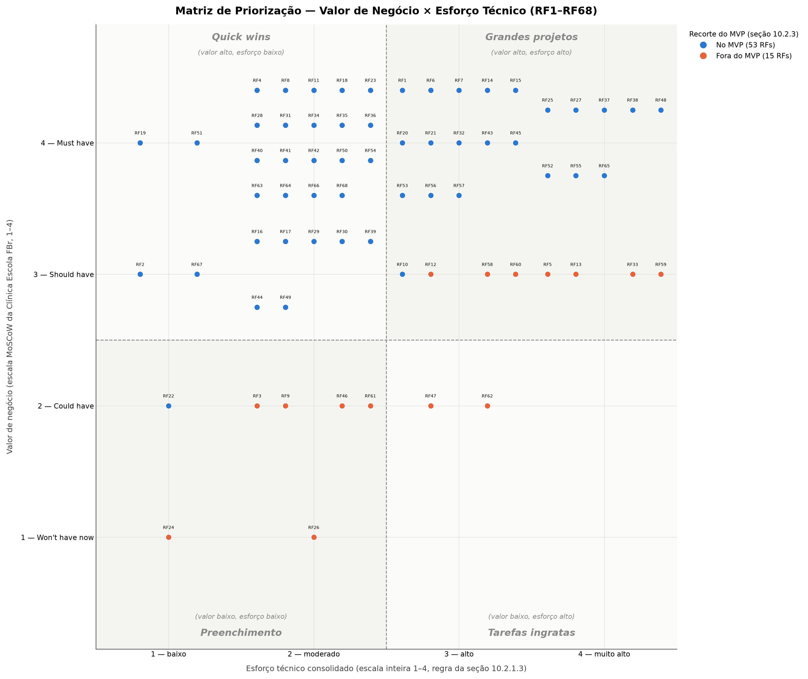

10. Backlog de Produto#
10.1 Backlog do Produto#
O backlog reúne os itens de trabalho do produto. Cada item corresponde a uma feature da Lista de features (FDD), que declara um requisito funcional (RF) e é restringida pelos RNFs da classificação da seção 10.2.3.1. O pertencimento ao MVP vem da priorização da seção 10.2, validada com a Clínica Escola FBr.
A organização segue o processo Planejar por Feature do FDD:
- Responsável: Líder de Feature que conduz o projeto, a construção e a demonstração do conjunto de features, conforme a composição da equipe; cada feature conta ainda com a revisão cruzada de outro integrante nas inspeções de design e de código.
- Ciclo: ciclo de construção em que a feature passa pelos processos Projetar por Feature e Construir por Feature — Ciclo 3 (14/10 a 27/10), Ciclo 4 (28/10 a 10/11), Ciclo 5 (11/11 a 17/11) ou Ciclo 6 (18/11 a 01/12) —, conforme o planejamento macro das Unidades 2, 3 e 4. No início do Ciclo 3, Gabriel prepara a base técnica do projeto (repositório, banco de dados, autenticação, integração contínua e provedores de e-mail, SMS e PDF), da qual dependem todas as features. Os itens que servem de base para os demais (acesso, inscrição, triagem, distribuição de casos e agendamento) vêm primeiro, a carga de cada responsável é distribuída pelas horas estimadas na escala de esforço (seção 10.2.1.2), e cada CP do MVP tem ao menos um incremento construído até a entrega da Unidade 3, em 17/11. A construção do MVP termina no Ciclo 6, no início de dezembro, como combinado com a FBr; o Ciclo 7 (02/12 a 10/12) fica reservado à demonstração integrada, ao aceite da FBr e à entrega da Unidade 4, em 10/12.
- Ordem: os itens aparecem na ordem de construção, ciclo a ciclo, respeitando as dependências declaradas na rastreabilidade de cada RF.
- Estado: estado da feature no FDD, conforme o estudo do FDD (§3.3). Os itens do MVP estão Planejados e passam a Em design depois de avaliados pelo Definition of Ready; os itens fora do MVP permanecem Identificados.
- Issue: issue do GitHub em que o item é acompanhado e em que a avaliação do DoR é registrada, quando já criada.
10.1.1 Mapa do escopo#
O mapa distribui as features pelas Áreas e pelos conjuntos de features do FDD, com o Líder de Feature responsável e o ciclo em que cada conjunto fica concluído no MVP.
| Área (FDD) | Conjunto de features | No MVP | Versão posterior | Responsável | Conclusão prevista |
|---|---|---|---|---|---|
| Inscrição no atendimento | Inscrição on-line | 2 | 1 | Jônatas | Ciclo 3 |
| Triagem clínica | Triagem e sinalização de casos | 2 | 1 | Luís Henrique | Ciclo 3 |
| Gestão da fila de espera | Fila de espera e consulta de posição | 2 | 1 | Jônatas | Ciclo 4 |
| Agendamento e acompanhamento de sessões | Agendamento | 2 | 1 | Nicolas | Ciclo 4 |
| Agendamento e acompanhamento de sessões | Confirmação e lembrete | 1 | 1 | Nicolas | Ciclo 4 |
| Agendamento e acompanhamento de sessões | Cancelamento | 3 | 0 | Nicolas | Ciclo 5 |
| Gestão de casos | Distribuição entre supervisores | 3 | 0 | Maria Clara | Ciclo 3 |
| Gestão de casos | Vinculação a estagiário | 3 | 0 | Maria Clara | Ciclo 4 |
| Gestão de casos | Acompanhamento e reorganização | 1 | 2 | Maria Clara | Ciclo 4 |
| Acompanhamento clínico | Prontuário | 2 | 0 | Luís Henrique | Ciclo 4 |
| Acompanhamento clínico | Registro de evolução por sessão | 6 | 0 | Luís Henrique | Ciclo 6 |
| Acompanhamento clínico | Encerramento do ciclo | 1 | 1 | Luís Henrique | Ciclo 6 |
| Assiduidade e alertas | Controle de faltas do paciente | 5 | 0 | Gabriel | Ciclo 4 |
| Assiduidade e alertas | Controle de faltas do estagiário | 4 | 0 | Nicolas | Ciclo 6 |
| Registros administrativos do atendimento | Contribuição social | 3 | 0 | Joaquim | Ciclo 6 |
| Registros administrativos do atendimento | Declaração de comparecimento | 2 | 2 | Maria Clara | Ciclo 6 |
| Gestão institucional | Indicadores e relatórios institucionais | 2 | 0 | Gabriel | Ciclo 6 |
| Acesso e segurança | Autenticação | 3 | 0 | Joaquim | Ciclo 4 |
| Acesso e segurança | Controle de acesso por perfil | 3 | 0 | Gabriel | Ciclo 3 |
| Acesso e segurança | Proteção de dados | 3 | 0 | Jônatas | Ciclo 6 |
| Continuidade do atendimento | Continuidade de casos entre semestres | 0 | 3 | Gabriel | — |
| Acessibilidade e usabilidade | Personalização de exibição | 0 | 2 | Gabriel | — |
| Total | 53 | 15 |
10.1.2 Itens de trabalho do MVP#
| Ordem | Item de trabalho | CP | Depende de | Responsável | Ciclo | Estado | Issue |
|---|---|---|---|---|---|---|---|
| 1 | RF1 — Registrar solicitação de atendimento on-line | CP1 | — | Jônatas | Ciclo 3 | Planejada | — |
| 2 | RF2 — Emitir comprovante de inscrição | CP1 | — | Jônatas | Ciclo 3 | Planejada | — |
| 3 | RF4 — Organizar informações da inscrição para triagem | CP2 | CP1 | Luís Henrique | Ciclo 3 | Planejada | — |
| 4 | RF6 — Registrar prioridade clínica do inscrito | CP2 | RF4, RF5 (fora do MVP) | Luís Henrique | Ciclo 3 | Planejada | — |
| 5 | RF18 — Listar casos aguardando distribuição | CP5 | — | Maria Clara | Ciclo 3 | Planejada | — |
| 6 | RF19 — Registrar áreas de especialidade do supervisor | CP5 | — | Maria Clara | Ciclo 3 | Planejada | — |
| 7 | RF20 — Distribuir caso a supervisor conforme área de especialidade | CP5 | RF18, RF19, RF6 | Maria Clara | Ciclo 3 | Planejada | — |
| 8 | RF50 — Autenticar usuário institucional | CP12 | — | Joaquim | Ciclo 3 | Planejada | #45 |
| 9 | RF53 — Cadastrar usuário institucional com perfil de acesso | CP12 | — | Gabriel | Ciclo 3 | Planejada | #48 |
| 10 | RF54 — Desativar usuário institucional | CP12 | — | Gabriel | Ciclo 3 | Planejada | #49 |
| 11 | RF21 — Vincular paciente a estagiário responsável | CP5 | RF20, RF53, RF54 | Maria Clara | Ciclo 3 | Planejada | — |
| 12 | RF10 — Agendar sessão do paciente | CP4 | CP5 | Nicolas | Ciclo 3 | Planejada | — |
| 13 | RF66 — Criar e inicializar o prontuário do paciente | CP6 | RF21 | Luís Henrique | Ciclo 3 | Planejada | — |
| 14 | RF55 — Restringir acesso ao prontuário do paciente | CP12 | — | Gabriel | Ciclo 3 | Planejada | #50 |
| 15 | RF7 — Ordenar inscritos na fila de espera | CP3 | — | Jônatas | Ciclo 4 | Planejada | — |
| 16 | RF11 — Consultar agenda de sessões do estagiário | CP4 | RF10, CP5 | Nicolas | Ciclo 4 | Planejada | — |
| 17 | RF14 — Confirmar presença em sessão agendada | CP4 | RF10 | Nicolas | Ciclo 4 | Planejada | — |
| 18 | RF15 — Registrar cancelamento de sessão pelo paciente | CP4 | RF10 | Nicolas | Ciclo 4 | Planejada | — |
| 19 | RF16 — Registrar cancelamento de sessão pelo estagiário | CP4 | RF10, CP5 | Nicolas | Ciclo 4 | Planejada | — |
| 20 | RF22 — Consultar responsáveis pelo caso | CP5 | RF21 | Maria Clara | Ciclo 4 | Planejada | — |
| 21 | RF23 — Consultar casos sob responsabilidade do estagiário ou supervisor | CP5 | RF21 | Maria Clara | Ciclo 4 | Planejada | — |
| 22 | RF25 — Transferir caso para outro estagiário ou supervisor | CP5 | RF21 | Maria Clara | Ciclo 4 | Planejada | — |
| 23 | RF27 — Consultar prontuário do paciente | CP6 | RF66, CP5 | Luís Henrique | Ciclo 4 | Planejada | — |
| 24 | RF28 — Registrar evolução da sessão realizada | CP7 | CP4, CP5 | Luís Henrique | Ciclo 4 | Planejada | — |
| 25 | RF34 — Registrar falta do paciente na sessão | CP9 | RF10, RF14, RF15 | Gabriel | Ciclo 4 | Planejada | — |
| 26 | RF35 — Contabilizar faltas do paciente no ciclo | CP9 | RF15, RF34 | Gabriel | Ciclo 4 | Planejada | — |
| 27 | RF36 — Emitir alerta de limite de faltas atingido | CP9 | RF35 | Gabriel | Ciclo 4 | Planejada | — |
| 28 | RF37 — Desligar paciente por faltas e liberar vaga | CP9 | RF36 | Gabriel | Ciclo 4 | Planejada | — |
| 29 | RF38 — Reverter desligamento de paciente por faltas | CP9 | RF37 | Gabriel | Ciclo 4 | Planejada | — |
| 30 | RF51 — Encerrar sessão do usuário | CP12 | — | Joaquim | Ciclo 4 | Planejada | #46 |
| 31 | RF52 — Verificar identidade do paciente ou responsável | CP12 | — | Joaquim | Ciclo 4 | Planejada | #47 |
| 32 | RF8 — Consultar posição individual na fila | CP3 | RF52 | Jônatas | Ciclo 4 | Planejada | — |
| 33 | RF57 — Registrar consentimento para tratamento de dados | CP12 | — | Jônatas | Ciclo 4 | Planejada | #52 |
| 34 | RF17 — Notificar paciente sobre ausência do estagiário | CP4 | RF16 | Nicolas | Ciclo 5 | Planejada | — |
| 35 | RF29 — Corrigir evolução registrada | CP7 | RF28 | Luís Henrique | Ciclo 5 | Planejada | — |
| 36 | RF39 — Consolidar faltas do estagiário para a supervisão | CP9 | RF16 | Nicolas | Ciclo 5 | Planejada | — |
| 37 | RF41 — Registrar pagamento da contribuição social do paciente | CP10 | — | Joaquim | Ciclo 5 | Planejada | #43 |
| 38 | RF44 — Listar sessões com comparecimento registrado do paciente | CP10 | RF52 | Maria Clara | Ciclo 5 | Planejada | — |
| 39 | RF48 — Consultar indicadores operacionais | CP11 | RF9 (fora do MVP), RF37, RF38, CP5 | Gabriel | Ciclo 5 | Planejada | #22 |
| 40 | RF56 — Consultar registro de acessos ao prontuário | CP12 | — | Jônatas | Ciclo 5 | Planejada | #51 |
| 41 | RF30 — Registrar complemento de evolução da sessão | CP7 | RF28 | Luís Henrique | Ciclo 6 | Planejada | — |
| 42 | RF31 — Consultar evolução de uma sessão específica | CP7 | RF28, RF29, RF30 | Luís Henrique | Ciclo 6 | Planejada | — |
| 43 | RF32 — Consultar histórico de evolução do paciente | CP7 | RF27, RF28, RF29, RF30 | Luís Henrique | Ciclo 6 | Planejada | — |
| 44 | RF67 — Validar evolução pelo supervisor | CP7 | RF28 | Luís Henrique | Ciclo 6 | Planejada | — |
| 45 | RF68 — Encerrar caso por alta | CP7 | RF28 | Luís Henrique | Ciclo 6 | Planejada | — |
| 46 | RF40 — Contabilizar faltas do estagiário no semestre | CP9 | RF16, RF39 | Nicolas | Ciclo 6 | Planejada | — |
| 47 | RF63 — Sinalizar reprovação do estagiário por faltas | CP9 | RF40 | Nicolas | Ciclo 6 | Planejada | — |
| 48 | RF64 — Registrar decisão institucional sobre a reprovação do estagiário | CP9 | RF63 | Nicolas | Ciclo 6 | Planejada | — |
| 49 | RF42 — Consultar situação da contribuição social dos pacientes | CP10 | — | Joaquim | Ciclo 6 | Planejada | #44 |
| 50 | RF43 — Bloquear agendamento por contribuição social pendente | CP10 | RF41, RF42 | Joaquim | Ciclo 6 | Planejada | — |
| 51 | RF45 — Emitir declaração de comparecimento do paciente | CP10 | RF52 | Maria Clara | Ciclo 6 | Planejada | — |
| 52 | RF49 — Exportar relatório institucional em PDF | CP11 | RF48 | Gabriel | Ciclo 6 | Planejada | #23 |
| 53 | RF65 — Registrar revogação do consentimento | CP12 | RF57, RF52 | Jônatas | Ciclo 6 | Planejada | — |
10.1.3 Itens para versões posteriores#
Os itens abaixo ficam fora do recorte do MVP e voltam a ser avaliados ao fim da Unidade 4. O motivo de cada um está na definição do MVP, e as condições combinadas com a FBr para o período em que não estão construídos, na validação do MVP com o cliente e no próprio RF.
| Item de trabalho | CP | Responsável | Estado | Issue |
|---|---|---|---|---|
| RF3 — Registrar inscrição assistida | CP1 | Jônatas | Identificada | — |
| RF5 — Sinalizar pontos de atenção da inscrição | CP2 | Luís Henrique | Identificada | — |
| RF9 — Manter e informar condições gerais da fila | CP3 | Jônatas | Identificada | — |
| RF12 — Reagendar sessão do paciente | CP4 | Nicolas | Identificada | — |
| RF13 — Enviar lembrete de sessão agendada | CP4 | Nicolas | Identificada | — |
| RF24 — Visualizar distribuição de casos por supervisor | CP5 | Maria Clara | Identificada | — |
| RF26 — Consultar histórico de responsáveis do caso | CP5 | Maria Clara | Identificada | — |
| RF33 — Gerar relatório final de evolução | CP8 | Luís Henrique | Identificada | — |
| RF46 — Reemitir declaração de comparecimento | CP10 | Maria Clara | Identificada | — |
| RF47 — Validar autenticidade da declaração | CP10 | Maria Clara | Identificada | — |
| RF58 — Listar casos elegíveis para continuidade entre semestres | CP13 | Gabriel | Identificada | — |
| RF59 — Registrar decisão de continuidade do caso | CP13 | Gabriel | Identificada | — |
| RF60 — Vincular caso a novo estagiário na continuidade | CP13 | Gabriel | Identificada | — |
| RF61 — Ativar modo de alto contraste | CP14 | Gabriel | Identificada | #24 |
| RF62 — Ajustar tamanho do texto | CP14 | Gabriel | Identificada | #25 |
10.2 Priorização e Recorte do MVP#
10.2.1 Avaliação de Valor de Negócio e de Esforço Técnico#
10.2.1.1 Escala e critérios de valor de negócio#
O valor de negócio de cada RF foi avaliado pela Clínica Escola FBr — Karla (secretaria) e Robson (coordenador do curso de Psicologia) —, a partir de um rascunho inicial preenchido pela equipe como ponto de partida, conforme alinhado na reunião de 24/09/2026 (ver Reuniões da Unidade 2), e revisado com Thiago Cardoso Viana (Diretor Financeiro e de Tecnologia) na validação do MVP (seção 10.2.4), que trouxe para a avaliação os critérios institucionais e de operação da clínica — como a continuidade do atendimento quando um estagiário se afasta e os relatórios prestados ao MEC. A escala adotada segue o método MoSCoW, com cada categoria associada a uma pontuação mensurável de 1 a 4, de significado claramente definido:
| Pontuação | Classificação | Interpretação |
|---|---|---|
| 4 | Must have | Indispensável para resolver o problema central ou viabilizar o produto |
| 3 | Should have | Muito importante, mas o produto ainda pode operar temporariamente sem o requisito |
| 2 | Could have | Agrega valor, mas pode ser adiado sem comprometer o objetivo principal |
| 1 | Won't have now | Não é prioritário para a versão atual |
A atribuição de cada nota não ficou restrita à etiqueta MoSCoW isolada: para cada RF, a Clínica Escola registrou uma justificativa em frase curta explicando o porquê da nota. Lidas em conjunto, essas justificativas apontam para critérios recorrentes — a importância do requisito para o problema central do projeto (as falhas de agendamento e de confirmação de presença que hoje produzem horários ociosos), a contribuição para os objetivos específicos da Solução Proposta, o impacto percebido por pacientes, estagiários e supervisores, e a dependência de outras funcionalidades já priorizadas — mas não seguiram um checklist formal aplicado requisito a requisito. As justificativas individuais estão registradas por RF na coluna "Justificativa do cliente" da tabela consolidada (10.2.1.4).
10.2.1.2 Escalas adotadas#
Foram mantidas as três escalas propostas pela disciplina, todas orientadas no mesmo sentido (quanto maior a pontuação, maior o custo ou o risco).
Esforço necessário para implementação
| Pontuação | Interpretação | Descrição |
|---|---|---|
| 1 | Esforço baixo | até 2 horas |
| 2 | Esforço moderado | entre 2 e 6 horas |
| 3 | Esforço alto | entre 6 e 12 horas |
| 4 | Esforço muito alto | mais de 12 horas |
O esforço considera o desenvolvimento completo do requisito — persistência, regra de negócio, serviço de aplicação, interface e testes —, conforme o fluxo de construção por feature adotado pela equipe.
Complexidade técnica
| Pontuação | Interpretação |
|---|---|
| 1 | Utiliza solução conhecida, com poucas dependências |
| 2 | Exige alguma investigação ou integração |
| 3 | Possui várias dependências ou incertezas técnicas |
| 4 | Apresenta elevada incerteza, integração crítica ou tecnologia não dominada |
Lacuna de capacidade da equipe
| Pontuação | Interpretação |
|---|---|
| 1 | A equipe domina plenamente os conhecimentos necessários |
| 2 | A equipe possui conhecimento suficiente, com pouca aprendizagem adicional |
| 3 | A equipe precisa desenvolver conhecimentos relevantes |
| 4 | A equipe ainda não possui os conhecimentos ou recursos necessários |
10.2.1.3 Regra de consolidação#
O esforço técnico consolidado de cada requisito é a média aritmética simples dos três critérios:
Regras definidas previamente e aplicadas de forma uniforme a todos os requisitos:
- O resultado é apresentado com uma casa decimal, com arredondamento matemático padrão (2,666… → 2,7).
- Nenhum critério recebe peso maior que os outros. A equipe considerou ponderar a lacuna de capacidade, mas optou pela média simples para manter a regra previsível e auditável ao longo de todas as CPs.
- O valor decimal é o valor de referência. Quando for necessário convertê-lo para a escala de 1 a 4 (por exemplo, para posicionar o requisito na matriz 4 × 4), aplica-se o arredondamento para o inteiro mais próximo, com 0,5 arredondado para cima.
- A avaliação considerou a descrição completa de cada requisito, seus critérios de aceitação, suas dependências declaradas e as restrições transversais indicadas na rastreabilidade — não apenas o nome do requisito.
10.2.1.4 Tabela consolidada#
| Código | Requisito | CP | Valor de negócio | Justificativa do cliente | Esforço | Complexidade | Lacuna de capacidade | Esforço técnico consolidado |
|---|---|---|---|---|---|---|---|---|
| RF1 | Registrar solicitação de atendimento on-line | CP1 | 4 | Ponto de entrada de todo o fluxo; sem isso nada começa | 4 | 2 | 2 | 2,7 |
| RF2 | Emitir comprovante de inscrição | CP1 | 3 | Importante pro paciente, mas dá pra suprir manualmente no início | 2 | 1 | 1 | 1,3 |
| RF3 | Registrar inscrição assistida | CP1 | 2 | Atende exclusão digital, mas por ora a recepção pode preencher o próprio formulário on-line (RF1) pelo interessado | 2 | 2 | 2 | 2,0 |
| RF4 | Organizar informações da inscrição para triagem | CP2 | 4 | Base para a supervisão fazer a triagem | 2 | 2 | 2 | 2,0 |
| RF5 | Sinalizar pontos de atenção da inscrição | CP2 | 3 | Ajuda a triagem, mas dá pra ler as informações manualmente | 4 | 4 | 3 | 3,7 |
| RF6 | Registrar prioridade clínica do inscrito | CP2 | 4 | Alimenta a ordenação da fila (CP3); sem isso a fila não tem critério | 3 | 3 | 2 | 2,7 |
| RF7 | Ordenar inscritos na fila de espera | CP3 | 4 | Núcleo de como o paciente entra no atendimento | 3 | 3 | 2 | 2,7 |
| RF8 | Consultar posição individual na fila | CP3 | 4 | Melhora a experiência, mas a fila funciona sem essa consulta | 2 | 3 | 2 | 2,3 |
| RF9 | Manter e informar condições gerais da fila | CP3 | 2 | Informação geral, não bloqueia a operação | 3 | 2 | 2 | 2,3 |
| RF10 | Agendar sessão do paciente | CP4 | 3 | Núcleo do agendamento | 4 | 3 | 2 | 3,0 |
| RF11 | Consultar agenda de sessões do estagiário | CP4 | 4 | Estagiário precisa disso pra atuar no dia a dia | 2 | 2 | 1 | 1,7 |
| RF12 | Reagendar sessão do paciente | CP4 | 3 | Importante, mas no início dá pra cancelar e agendar de novo, sem contar falta | 4 | 4 | 2 | 3,3 |
| RF13 | Enviar lembrete de sessão agendada | CP4 | 3 | Reduz falta, mas não é essencial pra operação existir | 4 | 4 | 4 | 4,0 |
| RF14 | Confirmar presença em sessão agendada | CP4 | 4 | Alimenta assiduidade (CP9), mas dá pra registrar manualmente | 3 | 3 | 3 | 3,0 |
| RF15 | Registrar cancelamento de sessão pelo paciente | CP4 | 4 | Sem registrar o aviso do paciente, a ausência conta como falta e pode até desligá-lo indevidamente | 3 | 3 | 2 | 2,7 |
| RF16 | Registrar cancelamento de sessão pelo estagiário | CP4 | 3 | Mesma lógica do RF15 | 2 | 2 | 1 | 1,7 |
| RF17 | Notificar paciente sobre ausência do estagiário | CP4 | 3 | Comunicação útil, não bloqueia o fluxo | 2 | 2 | 2 | 2,0 |
| RF18 | Listar casos aguardando distribuição | CP5 | 4 | Visibilidade operacional essencial | 2 | 2 | 1 | 1,7 |
| RF19 | Registrar áreas de especialidade do supervisor | CP5 | 4 | Necessário pra lógica de distribuição funcionar | 2 | 1 | 1 | 1,3 |
| RF20 | Distribuir caso a supervisor conforme área de especialidade | CP5 | 4 | Lógica central de distribuição | 3 | 3 | 2 | 2,7 |
| RF21 | Vincular paciente a estagiário responsável | CP5 | 4 | Base pra tudo que depende de responsável (prontuário, evolução) | 3 | 3 | 2 | 2,7 |
| RF22 | Consultar responsáveis pelo caso | CP5 | 2 | Consulta útil, mas inferível de outras telas no início | 1 | 1 | 1 | 1,0 |
| RF23 | Consultar casos sob responsabilidade do estagiário ou supervisor | CP5 | 4 | Necessário pro trabalho diário de estagiários/supervisores | 2 | 2 | 1 | 1,7 |
| RF24 | Visualizar distribuição de casos por supervisor | CP5 | 1 | Visão gerencial; pode ficar para uma versão posterior | 2 | 1 | 1 | 1,3 |
| RF25 | Transferir caso para outro estagiário ou supervisor | CP5 | 4 | Se um estagiário sai ou adoece, o paciente fica travado e se perde o histórico de quem acessou o prontuário | 4 | 4 | 3 | 3,7 |
| RF26 | Consultar histórico de responsáveis do caso | CP5 | 1 | Auditoria/histórico, valioso mas não bloqueia | 2 | 3 | 2 | 2,3 |
| RF27 | Consultar prontuário do paciente | CP6 | 4 | Razão de existir do sistema | 4 | 4 | 3 | 3,7 |
| RF66 | Criar e inicializar o prontuário do paciente | CP6 | 4 | Sem isso o prontuário não chega a existir formalmente nem guarda os dados iniciais (anamnese, contrato) | 2 | 2 | 1 | 1,7 |
| RF28 | Registrar evolução da sessão realizada | CP7 | 4 | Registro clínico central | 3 | 2 | 2 | 2,3 |
| RF29 | Corrigir evolução registrada | CP7 | 3 | Importante pra qualidade do dado; a correção precisa guardar a versão original | 2 | 2 | 2 | 2,0 |
| RF30 | Registrar complemento de evolução da sessão | CP7 | 3 | Novo (resposta da FBr); complementa o registro principal, não o substitui | 2 | 2 | 2 | 2,0 |
| RF67 | Validar evolução pelo supervisor | CP7 | 3 | Conferência mínima de qualidade pelo supervisor; o fluxo clínico opera sem ela no primeiro momento | 1 | 1 | 1 | 1,0 |
| RF68 | Encerrar caso por alta | CP7 | 4 | Fecha o ciclo de atendimento dos casos que não vão continuar, além do desligamento por faltas | 2 | 2 | 1 | 1,7 |
| RF31 | Consultar evolução de uma sessão específica | CP7 | 4 | Necessário pra continuidade do acompanhamento | 3 | 2 | 2 | 2,3 |
| RF32 | Consultar histórico de evolução do paciente | CP7 | 4 | Necessário pra supervisão e continuidade | 3 | 3 | 2 | 2,7 |
| RF33 | Gerar relatório final de evolução | CP8 | 3 | Entregável importante, mas pode ser compilado manualmente na primeira versão | 4 | 4 | 3 | 3,7 |
| RF34 | Registrar falta do paciente na sessão | CP9 | 4 | Dado base para toda a política de faltas | 2 | 2 | 1 | 1,7 |
| RF35 | Contabilizar faltas do paciente no ciclo | CP9 | 4 | Necessário para disparar a política de duas faltas | 2 | 2 | 2 | 2,0 |
| RF36 | Emitir alerta de limite de faltas atingido | CP9 | 4 | Comportamento central da política de assiduidade do paciente | 2 | 2 | 1 | 1,7 |
| RF37 | Desligar paciente por faltas e liberar vaga | CP9 | 4 | Fecha o ciclo da política e libera a vaga para reaproveitamento | 4 | 4 | 3 | 3,7 |
| RF38 | Reverter desligamento de paciente por faltas | CP9 | 4 | Regra de exceção confirmada pela FBr; exige preservar histórico e tratar vaga já realocada | 4 | 4 | 3 | 3,7 |
| RF39 | Consolidar faltas do estagiário para a supervisão | CP9 | 3 | Consulta de apoio à supervisão; não bloqueia o fluxo clínico principal | 2 | 2 | 1 | 1,7 |
| RF40 | Contabilizar faltas do estagiário no semestre | CP9 | 4 | Base para a regra institucional de reprovação por três faltas | 2 | 2 | 2 | 2,0 |
| RF63 | Sinalizar reprovação do estagiário por faltas | CP9 | 4 | Novo requisito derivado da regra confirmada de três faltas; valor de negócio alinhado ao RF40 conforme orientação da equipe | 3 | 2 | 2 | 2,3 |
| RF64 | Registrar decisão institucional sobre a reprovação do estagiário | CP9 | 4 | Completa o fluxo da reprovação do estagiário; valor de negócio alinhado ao RF40 conforme orientação da equipe | 3 | 2 | 2 | 2,3 |
| RF41 | Registrar pagamento da contribuição social do paciente | CP10 | 4 | Controle administrativo necessário para a regra institucional da contribuição | 3 | 2 | 2 | 2,3 |
| RF42 | Consultar situação da contribuição social dos pacientes | CP10 | 4 | Dá visibilidade da situação da contribuição aos perfis autorizados | 3 | 2 | 2 | 2,3 |
| RF43 | Bloquear agendamento por contribuição social pendente | CP10 | 4 | Regra de negócio dependente do registro e consulta da contribuição; exige integração com agendamento | 3 | 3 | 2 | 2,7 |
| RF44 | Listar sessões com comparecimento registrado do paciente | CP10 | 3 | Apoia a emissão da declaração de comparecimento | 2 | 2 | 2 | 2,0 |
| RF45 | Emitir declaração de comparecimento do paciente | CP10 | 4 | Entregável externo recorrente e concreto para o paciente | 4 | 3 | 2 | 3,0 |
| RF46 | Reemitir declaração de comparecimento | CP10 | 2 | Suporte útil; a emissão inicial (RF45) já atende a necessidade principal | 2 | 2 | 1 | 1,7 |
| RF47 | Validar autenticidade da declaração | CP10 | 2 | Controle antifraude útil, mas não bloqueia o lançamento inicial | 3 | 3 | 2 | 2,7 |
| RF48 | Consultar indicadores operacionais | CP11 | 4 | Necessário para os relatórios institucionais que a FBr presta ao MEC | 4 | 4 | 3 | 3,7 |
| RF49 | Exportar relatório institucional em PDF | CP11 | 3 | Exportação usada nos relatórios institucionais da FBr ao MEC | 3 | 2 | 2 | 2,3 |
| RF50 | Autenticar usuário institucional | CP12 | 4 | Base de segurança para todas as funcionalidades internas | 3 | 2 | 2 | 2,3 |
| RF51 | Encerrar sessão do usuário | CP12 | 4 | Controle básico de segurança e sessão | 1 | 1 | 1 | 1,0 |
| RF52 | Verificar identidade do paciente ou responsável | CP12 | 4 | Necessário para acesso seguro a informações pessoais sem login institucional | 4 | 4 | 3 | 3,7 |
| RF53 | Cadastrar usuário institucional com perfil de acesso | CP12 | 4 | Necessário para provisionar contas e perfis institucionais | 4 | 3 | 3 | 3,3 |
| RF54 | Desativar usuário institucional | CP12 | 4 | Necessário para revogar acesso de usuários que deixam a clínica/estágio | 2 | 2 | 2 | 2,0 |
| RF55 | Restringir acesso ao prontuário do paciente | CP12 | 4 | Obrigação de sigilo e proteção de dados de saúde | 4 | 4 | 3 | 3,7 |
| RF56 | Consultar registro de acessos ao prontuário | CP12 | 4 | Trilha de auditoria importante para segurança e conformidade | 3 | 3 | 2 | 2,7 |
| RF57 | Registrar consentimento para tratamento de dados | CP12 | 4 | Base de privacidade/compliance para tratamento de dados no cenário adotado pelo projeto | 3 | 3 | 3 | 3,0 |
| RF65 | Registrar revogação do consentimento | CP12 | 4 | Complementa o fluxo de consentimento e privacidade; valor de negócio alinhado ao RF57 conforme orientação da equipe | 4 | 4 | 3 | 3,7 |
| RF58 | Listar casos elegíveis para continuidade entre semestres | CP13 | 3 | Apoia a virada de semestre; depende de critérios e calendário institucional | 3 | 3 | 2 | 2,7 |
| RF59 | Registrar decisão de continuidade do caso | CP13 | 3 | Registra decisão institucional e suas versões; depende do fluxo de continuidade | 4 | 4 | 3 | 3,7 |
| RF60 | Vincular caso a novo estagiário na continuidade | CP13 | 3 | Efetiva a continuidade com preservação de histórico e troca de responsável | 3 | 3 | 2 | 2,7 |
| RF61 | Ativar modo de alto contraste | CP14 | 2 | Recurso específico de acessibilidade; a acessibilidade geral já é obrigatória pelo RNF56 | 2 | 2 | 2 | 2,0 |
| RF62 | Ajustar tamanho do texto | CP14 | 2 | Recurso específico de acessibilidade complementar ao RNF56 | 3 | 3 | 2 | 2,7 |
10.2.2 Matriz de Priorização (Valor de Negócio × Esforço Técnico)#
A matriz cruza o valor de negócio de cada RF (1 a 4, atribuído pela Clínica Escola FBr — ver 10.2.1.1) com o esforço técnico consolidado, convertido para a escala inteira de 1 a 4 pela regra 3 da seção 10.2.1.3 (arredondamento para o inteiro mais próximo, com 0,5 para cima). Os 68 RFs declarados (RF1 a RF68) estão distribuídos no gráfico abaixo, dividido nos quatro quadrantes apresentados pelo professor na atividade: Quick wins (valor alto, esforço baixo), Grandes projetos (valor alto, esforço alto), Preenchimento (valor baixo, esforço baixo) e Tarefas ingratas (valor baixo, esforço alto).

Os pontos em azul compõem o recorte de MVP definido na seção 10.2.3; os pontos em laranja ficam para uma versão posterior. Dentro de cada célula da matriz (mesmo valor e mesmo esforço), os RFs são dispersos lado a lado apenas para permitir a leitura individual de cada ponto — essa dispersão não representa nenhuma ordem adicional de prioridade dentro da célula. A tabela completa com o valor, o esforço e a decisão de MVP de cada RF, célula a célula, está detalhada na seção 10.2.3 a seguir.
10.2.3 Definição do MVP#
O corte de MVP foi definido a partir da própria escala de valor de negócio usada na avaliação com a Clínica Escola FBr, que segue o MoSCoW (4 — Must have, indispensável; 3 — Should have, o sistema opera um tempo sem isso; 2 — Could have, agrega valor mas pode esperar; 1 — Won't have now, não é prioridade para esta versão). O esforço técnico entra como critério de desempate dentro de cada faixa de valor, para não inflar o MVP com itens caros que o próprio valor de negócio já qualifica como adiáveis:
- Valor 4 (Must have): entra no MVP independentemente do esforço técnico. Por definição, o sistema não funciona sem esses requisitos.
- Valor 1 (Won't have now): fica fora do MVP independentemente do esforço técnico, porque o próprio cliente já definiu que não é prioridade para esta versão.
- Valor 3 (Should have): entra no MVP somente com esforço técnico baixo ou moderado (1 ou 2). Com esforço alto ou muito alto (3 ou 4), fica para depois — o sistema consegue operar um tempo sem esses requisitos, e não vale o risco de entregar algo caro que não é indispensável.
- Valor 2 (Could have): entra no MVP somente com esforço técnico muito baixo (1), quando o custo de entregar já é praticamente o de não entregar. Com esforço 2 ou mais, fica para depois.
- Exceção por dependência funcional: um requisito que a regra 3 ou 4 excluiria pode ser promovido ao MVP quando outros requisitos já incluídos dependem diretamente dele para formar um fluxo de uso minimamente completo — situação prevista no enunciado da atividade ("Um RF de alto valor e alto esforço não deve ser automaticamente descartado" e a necessidade de "formar um fluxo de uso minimamente completo"). Essa exceção foi aplicada uma vez:
| RF promovido | Classificação pelas regras 1–4 | RFs do MVP que dependem dele | Por que o fluxo não fecha sem ele |
|---|---|---|---|
| RF10 — Agendar sessão do paciente | Should have, esforço alto (fora pela regra 3) | RF11, RF14, RF15, RF16, RF17 e RF43 | Os seis requisitos pressupõem uma sessão previamente agendada, sem a qual não têm sobre o que operar. |
Por que os demais RFs fora do MVP não foram promovidos
Nenhum outro RF excluído pelas regras 1–4 tem essa mesma condição de bloqueio: os demais RFs fora do MVP (RF3, RF5, RF9, RF12, RF13, RF24, RF26, RF33, RF46, RF47, RF58, RF59, RF60, RF61, RF62) são consultas, refinamentos ou fluxos que os RFs do MVP não pressupõem como pré-condição de existir. Em particular, RF5 aparece como "Dependência: RF4/RF5" na rastreabilidade de RF6 (CP2), mas a notação indica fontes alternativas de insumo para a decisão do supervisor — a própria RF6 descreve a classificação como julgamento clínico apoiado nas "informações e sinalizações disponíveis", e as informações organizadas por RF4 (no MVP) já bastam para essa decisão, com a sinalização automática de RF5 como reforço opcional. Da mesma forma, o RF13 (lembrete automático) aparece como integração na rastreabilidade do RF14, mas o link de confirmação de presença é enviado ao paciente no próprio agendamento (RF10), e o lembrete apenas o reforça; e o RF12 (remarcação em uma única operação) pode ser suprido por cancelamento (RF15/RF16) seguido de novo agendamento (RF10), sem contar falta. Em nenhum desses casos a ausência do RF fora do MVP deixa um RF do MVP sem nada sobre o que operar — ao contrário de RF10, cuja ausência impede por completo a execução dos RFs do MVP que dependem dele.
Aplicando o critério aos 68 RFs (RF1 a RF68): 53 entram no MVP e 15 ficam para uma versão posterior — 42 por serem Must have, 9 Should have de baixo esforço, 1 Should have de esforço alto promovido por dependência (RF10) e 1 Could have de esforço mínimo; dos 15 de fora, 7 são Should have de esforço alto, 6 são Could have de esforço moderado/alto e 2 são Won't have now.
A tabela abaixo aplica o critério requisito a requisito, mantendo a rastreabilidade entre CP, valor de negócio, esforço técnico e a decisão:
| Código | CP | Valor de negócio | Esforço técnico (1-4) | No MVP? | Motivo |
|---|---|---|---|---|---|
| RF1 | CP1 | 4 | 3 | Sim | Must have — indispensável; entra independentemente do esforço. |
| RF2 | CP1 | 3 | 1 | Sim | Should have com esforço baixo/moderado — vale entregar já. |
| RF3 | CP1 | 2 | 2 | Não | Could have com esforço moderado/alto — pode esperar, conforme a própria definição do cliente. |
| RF4 | CP2 | 4 | 2 | Sim | Must have — indispensável; entra independentemente do esforço. |
| RF5 | CP2 | 3 | 4 | Não | Should have com esforço alto — o sistema opera um tempo sem isso; adiado para reduzir risco do MVP. |
| RF6 | CP2 | 4 | 3 | Sim | Must have — indispensável; entra independentemente do esforço. |
| RF7 | CP3 | 4 | 3 | Sim | Must have — indispensável; entra independentemente do esforço. |
| RF8 | CP3 | 4 | 2 | Sim | Must have — indispensável; entra independentemente do esforço. |
| RF9 | CP3 | 2 | 2 | Não | Could have com esforço moderado/alto — pode esperar, conforme a própria definição do cliente. |
| RF10 | CP4 | 3 | 3 | Sim | Should have com esforço alto, mas promovido ao MVP por dependência: RF11, RF14, RF15, RF16, RF17 e RF43 (todos no MVP) pressupõem uma sessão já agendada — sem RF10 esses RFs não têm sobre o que operar, quebrando o fluxo mínimo de uso. |
| RF11 | CP4 | 4 | 2 | Sim | Must have — indispensável; entra independentemente do esforço. |
| RF12 | CP4 | 3 | 3 | Não | Should have com esforço alto — o sistema opera um tempo sem isso; adiado para reduzir risco do MVP. |
| RF13 | CP4 | 3 | 4 | Não | Should have com esforço alto — o sistema opera um tempo sem isso; adiado para reduzir risco do MVP. |
| RF14 | CP4 | 4 | 3 | Sim | Must have — indispensável; entra independentemente do esforço. |
| RF15 | CP4 | 4 | 3 | Sim | Must have — indispensável; entra independentemente do esforço. |
| RF16 | CP4 | 3 | 2 | Sim | Should have com esforço baixo/moderado — vale entregar já. |
| RF17 | CP4 | 3 | 2 | Sim | Should have com esforço baixo/moderado — vale entregar já. |
| RF18 | CP5 | 4 | 2 | Sim | Must have — indispensável; entra independentemente do esforço. |
| RF19 | CP5 | 4 | 1 | Sim | Must have — indispensável; entra independentemente do esforço. |
| RF20 | CP5 | 4 | 3 | Sim | Must have — indispensável; entra independentemente do esforço. |
| RF21 | CP5 | 4 | 3 | Sim | Must have — indispensável; entra independentemente do esforço. |
| RF22 | CP5 | 2 | 1 | Sim | Could have com esforço muito baixo — praticamente gratuito, entra. |
| RF23 | CP5 | 4 | 2 | Sim | Must have — indispensável; entra independentemente do esforço. |
| RF24 | CP5 | 1 | 1 | Não | Won't have now — o próprio cliente definiu que não é prioridade para esta versão. |
| RF25 | CP5 | 4 | 4 | Sim | Must have — indispensável; entra independentemente do esforço. |
| RF26 | CP5 | 1 | 2 | Não | Won't have now — o próprio cliente definiu que não é prioridade para esta versão. |
| RF27 | CP6 | 4 | 4 | Sim | Must have — indispensável; entra independentemente do esforço. |
| RF66 | CP6 | 4 | 2 | Sim | Must have — indispensável; entra independentemente do esforço. |
| RF28 | CP7 | 4 | 2 | Sim | Must have — indispensável; entra independentemente do esforço. |
| RF29 | CP7 | 3 | 2 | Sim | Should have com esforço baixo/moderado — vale entregar já. |
| RF30 | CP7 | 3 | 2 | Sim | Should have com esforço baixo/moderado — vale entregar já. |
| RF67 | CP7 | 3 | 1 | Sim | Should have com esforço baixo/moderado — vale entregar já. |
| RF68 | CP7 | 4 | 2 | Sim | Must have — indispensável; entra independentemente do esforço. |
| RF31 | CP7 | 4 | 2 | Sim | Must have — indispensável; entra independentemente do esforço. |
| RF32 | CP7 | 4 | 3 | Sim | Must have — indispensável; entra independentemente do esforço. |
| RF33 | CP8 | 3 | 4 | Não | Should have com esforço alto — o sistema opera um tempo sem isso; adiado para reduzir risco do MVP. |
| RF34 | CP9 | 4 | 2 | Sim | Must have — indispensável; entra independentemente do esforço. |
| RF35 | CP9 | 4 | 2 | Sim | Must have — indispensável; entra independentemente do esforço. |
| RF36 | CP9 | 4 | 2 | Sim | Must have — indispensável; entra independentemente do esforço. |
| RF37 | CP9 | 4 | 4 | Sim | Must have — indispensável; entra independentemente do esforço. |
| RF38 | CP9 | 4 | 4 | Sim | Must have — indispensável; entra independentemente do esforço. |
| RF39 | CP9 | 3 | 2 | Sim | Should have com esforço baixo/moderado — vale entregar já. |
| RF40 | CP9 | 4 | 2 | Sim | Must have — indispensável; entra independentemente do esforço. |
| RF63 | CP9 | 4 | 2 | Sim | Must have — indispensável; entra independentemente do esforço. |
| RF64 | CP9 | 4 | 2 | Sim | Must have — indispensável; entra independentemente do esforço. |
| RF41 | CP10 | 4 | 2 | Sim | Must have — indispensável; entra independentemente do esforço. |
| RF42 | CP10 | 4 | 2 | Sim | Must have — indispensável; entra independentemente do esforço. |
| RF43 | CP10 | 4 | 3 | Sim | Must have — indispensável; entra independentemente do esforço. |
| RF44 | CP10 | 3 | 2 | Sim | Should have com esforço baixo/moderado — vale entregar já. |
| RF45 | CP10 | 4 | 3 | Sim | Must have — indispensável; entra independentemente do esforço. |
| RF46 | CP10 | 2 | 2 | Não | Could have com esforço moderado/alto — pode esperar, conforme a própria definição do cliente. |
| RF47 | CP10 | 2 | 3 | Não | Could have com esforço moderado/alto — pode esperar, conforme a própria definição do cliente. |
| RF48 | CP11 | 4 | 4 | Sim | Must have — indispensável; entra independentemente do esforço. |
| RF49 | CP11 | 3 | 2 | Sim | Should have com esforço baixo/moderado — vale entregar já. |
| RF50 | CP12 | 4 | 2 | Sim | Must have — indispensável; entra independentemente do esforço. |
| RF51 | CP12 | 4 | 1 | Sim | Must have — indispensável; entra independentemente do esforço. |
| RF52 | CP12 | 4 | 4 | Sim | Must have — indispensável; entra independentemente do esforço. |
| RF53 | CP12 | 4 | 3 | Sim | Must have — indispensável; entra independentemente do esforço. |
| RF54 | CP12 | 4 | 2 | Sim | Must have — indispensável; entra independentemente do esforço. |
| RF55 | CP12 | 4 | 4 | Sim | Must have — indispensável; entra independentemente do esforço. |
| RF56 | CP12 | 4 | 3 | Sim | Must have — indispensável; entra independentemente do esforço. |
| RF57 | CP12 | 4 | 3 | Sim | Must have — indispensável; entra independentemente do esforço. |
| RF65 | CP12 | 4 | 4 | Sim | Must have — indispensável; entra independentemente do esforço. |
| RF58 | CP13 | 3 | 3 | Não | Should have com esforço alto — o sistema opera um tempo sem isso; adiado para reduzir risco do MVP. |
| RF59 | CP13 | 3 | 4 | Não | Should have com esforço alto — o sistema opera um tempo sem isso; adiado para reduzir risco do MVP. |
| RF60 | CP13 | 3 | 3 | Não | Should have com esforço alto — o sistema opera um tempo sem isso; adiado para reduzir risco do MVP. |
| RF61 | CP14 | 2 | 2 | Não | Could have com esforço moderado/alto — pode esperar, conforme a própria definição do cliente. |
| RF62 | CP14 | 2 | 3 | Não | Could have com esforço moderado/alto — pode esperar, conforme a própria definição do cliente. |
Este é o recorte do MVP validado com a Clínica Escola FBr, conforme o registro da seção 10.2.4. A classificação dos RNFs para o MVP, na subseção 10.2.3.1 a seguir, já reflete este recorte de 53 RFs, incluindo a promoção de RF10 por dependência. Os pontos ainda em aberto com a FBr estão registrados em Pendências de validação com a FBr.
10.2.3.1 Classificação dos Requisitos Não Funcionais para o MVP#
A classificação abaixo relaciona cada Requisito Não Funcional (RNF) ao recorte do MVP definido acima, usando quatro categorias:
- Obrigatório para o MVP Aplica-se independentemente do RF específico, por decorrer de exigência transversal de segurança, privacidade, acessibilidade, integridade ou continuidade operacional.
- Associado a RF do MVP Sua aplicabilidade decorre diretamente de um RF que está no MVP.
- Evolutivo O RF relacionado está no MVP, mas o próprio RNF pode ser refinado em iterações posteriores, sem bloquear o lançamento.
- Não aplicável ao MVP Depende de um RF que ficou fora do recorte atual, a ser reavaliado se esse RF for incorporado.
A classificação foi conferida requisito a requisito contra os 53 RFs selecionados na tabela acima — inclusive a promoção de RF10 por dependência.
| Código | Requisito não funcional | Classificação | RF/escopo relacionado | Justificativa |
|---|---|---|---|---|
| RNF1 | Identificação e recuperação de erros no formulário | Associado a RF do MVP | RF1 | Aplica-se diretamente à inscrição on-line e evita perda dos dados válidos durante correções. |
| RNF2 | Proteção das informações no comprovante de inscrição | Associado a RF do MVP | RF2 | RF2 está no recorte do MVP (Should have de esforço baixo); o comprovante de inscrição existe desde a primeira versão e sua proteção deve acompanhar o requisito. |
| RNF3 | Sigilo das informações de triagem | Obrigatório para o MVP | CP2 | Protege dados sensíveis de triagem e é condição mínima de privacidade. |
| RNF4 | Rastreabilidade das regras de sinalização | Não aplicável ao MVP | RF5 | Depende da sinalização automática de pontos de atenção; RF5 fica fora do MVP. Reavaliar se RF5 for incorporado. |
| RNF5 | Integridade e auditoria das decisões de prioridade | Obrigatório para o MVP | RF6 | A prioridade clínica afeta a fila e precisa preservar autoria, histórico e integridade. |
| RNF6 | Privacidade e controle de acesso à consulta da fila | Obrigatório para o MVP | RF8, RF52 | A consulta individual envolve dado pessoal e exige verificação de identidade. |
| RNF7 | Compreensibilidade das informações sobre a posição na fila | Associado a RF do MVP | RF8 | Acompanha a consulta de posição e evita interpretação da posição como garantia de prazo. |
| RNF8 | Confiabilidade das informações institucionais da fila | Não aplicável ao MVP | RF9 | Relaciona-se às informações gerais da fila; RF9 fica fora do MVP. Reavaliar se RF9 for incorporado. |
| RNF9 | Integridade do agendamento | Obrigatório para o MVP | CP4 | Evita conflitos de agenda e estados incompatíveis; condição operacional mínima, reforçada pela promoção de RF10 ao MVP. |
| RNF10 | Auditoria das operações sobre a sessão | Associado a RF do MVP | RF10, RF14, RF15, RF16 | Acompanha agendamento, confirmação de presença e cancelamento (pelo paciente e pelo estagiário) — todos no MVP — preservando rastreabilidade das alterações; a parte da meta referente ao reagendamento (RF12) entra no escopo quando o requisito for incorporado. |
| RNF11 | Confiabilidade do envio de lembretes | Não aplicável ao MVP | RF13 | Depende do lembrete automático; RF13 fica fora do MVP (o link de confirmação do RF14 é enviado no próprio agendamento, RF10). Reavaliar se RF13 for incorporado. |
| RNF12 | Tempo de resposta nas operações de agendamento | Evolutivo | CP4 | Meta quantitativa de desempenho que pode ser calibrada com testes de carga após o fluxo mínimo (RF10, RF11, RF14–RF17) estar em produção. |
| RNF13 | Minimização de dados na agenda | Obrigatório para o MVP | RF11 | Reduz exposição de dados e atende ao princípio de minimização. |
| RNF14 | Disponibilidade do módulo de agendamento | Evolutivo | CP4 | Meta formal de disponibilidade depende de infraestrutura e monitoramento, a formalizar após o MVP. |
| RNF15 | Usabilidade da confirmação de presença pelo paciente | Associado a RF do MVP | RF14 | Acompanha a confirmação de presença e a proteção do fluxo público. |
| RNF16 | Autorização para distribuição, vínculo e transferência de casos | Obrigatório para o MVP | RF20, RF21, RF25 | Alterações de responsabilidade clínica, inclusive a transferência de caso, exigem autorização por perfil. |
| RNF17 | Privacidade dos dados nas telas de distribuição e consulta | Obrigatório para o MVP | CP5 | As telas de distribuição não devem expor dados além do necessário. |
| RNF18 | Auditoria de atribuições, vínculos e transferências | Associado a RF do MVP | RF20, RF21, RF25 | Acompanha distribuição, vínculo e transferência de responsáveis, preservando rastreabilidade de todas elas. |
| RNF19 | Integridade dos vínculos de responsabilidade | Obrigatório para o MVP | RF20, RF21 | Impede vínculos incompatíveis e preserva consistência de responsabilidade. |
| RNF20 | Continuidade do histórico na troca de responsável | Associado a RF do MVP | RF25 | Acompanha a transferência de caso e preserva o histórico na troca de responsável. |
| RNF21 | Desempenho das listagens e operações de vínculo | Evolutivo | CP5 | Meta de desempenho a refinar com massa de dados representativa. |
| RNF22 | Usabilidade da distribuição e do vínculo de casos | Evolutivo | RF20, RF21 | Meta específica de usabilidade que pode ser refinada após validação do fluxo. |
| RNF23 | Manutenibilidade das áreas de especialidade | Evolutivo | RF19 | Propriedade de modificabilidade importante, mas não impede a operação mínima. |
| RNF24 | Acessibilidade das telas de distribuição e consulta | Obrigatório para o MVP | CP5 | Acessibilidade mínima das interfaces internas deve existir desde a primeira versão utilizável. |
| RNF25 | Sigilo do conteúdo do prontuário | Obrigatório para o MVP | RF27, RF55, RF66 | O prontuário contém dados de saúde e exige proteção desde qualquer versão utilizável, inclusive os dados iniciais (anamnese e contrato) registrados na criação do prontuário (RF66). |
| RNF26 | Sigilo do conteúdo da evolução | Obrigatório para o MVP | RF28, RF55 | As evoluções contêm dados clínicos sensíveis e exigem sigilo. |
| RNF27 | Integridade e proveniência dos registros de evolução | Obrigatório para o MVP | RF28, RF31, RF32, RF67, RF68 | Registros clínicos precisam preservar autor, sessão, paciente e histórico, inclusive a validação do supervisor (RF67) e o encerramento por alta (RF68). |
| RNF28 | Auditoria das correções de evolução | Associado a RF do MVP | RF29 | Acompanha a correção de evolução e preserva a versão original, condição mínima de confiabilidade do dado clínico. |
| RNF29 | Desempenho do registro e da consulta de evolução | Evolutivo | CP7 | Meta quantitativa de desempenho a aferir após implementação do fluxo funcional. |
| RNF30 | Usabilidade do registro de evolução | Evolutivo | RF28 | Meta de tempo/interações que pode ser refinada com testes de estagiários. |
| RNF31 | Fidelidade e rastreabilidade do relatório final | Não aplicável ao MVP | RF33 | Acompanha o relatório final de evolução; RF33 fica fora do MVP. Reavaliar se for incorporado. |
| RNF32 | Integridade e auditoria da contagem de faltas | Obrigatório para o MVP | RF34–RF38 | A política de faltas pode gerar desligamento; contagem e decisões precisam ser íntegras e auditáveis. |
| RNF33 | Visibilidade do alerta de limite de faltas | Associado a RF do MVP | RF36 | Acompanha o alerta e garante percepção também sem dependência exclusiva de cor. |
| RNF34 | Tempo de liberação da vaga após desligamento | Associado a RF do MVP | RF37 | Acompanha a liberação de vaga e evita ociosidade indevida. |
| RNF35 | Privacidade dos dados de faltas do estagiário | Obrigatório para o MVP | RF39, RF40, RF63, RF64 | Abrange consulta, contagem, sinalização e decisão sobre faltas do estagiário. |
| RNF36 | Auditoria dos registros de contribuição social | Associado a RF do MVP | RF41 | Acompanha registro/correção da contribuição e alteração do parâmetro de valor. |
| RNF37 | Privacidade dos dados na declaração | Associado a RF do MVP | RF45 | Evita inclusão de dados clínicos desnecessários no documento. |
| RNF38 | Autorização para emissão e consulta | Obrigatório para o MVP | RF45, RF50, RF52 | Emissão/consulta envolvem dados pessoais e exigem perfis e identidade verificada. |
| RNF39 | Auditoria de emissões e reemissões | Associado a RF do MVP | RF45 | Acompanha a emissão, registrando autoria e operação; a reemissão (RF46) fica fora por ora, e a parte da meta referente a ela entra no escopo de auditoria quando for incorporada. |
| RNF40 | Tempo de geração da declaração | Evolutivo | RF45 | Meta de desempenho que pode ser calibrada após o fluxo de emissão. |
| RNF41 | Usabilidade da emissão | Evolutivo | RF45 | Meta de interações/taxa de sucesso a aperfeiçoar em testes posteriores. |
| RNF42 | Portabilidade do documento | Associado a RF do MVP | RF45 | Acompanha a emissão e garante PDF A4 legível para uso externo. |
| RNF43 | Acessibilidade da tela de emissão | Obrigatório para o MVP | RF44, RF45 | A interface de emissão deve atender requisitos mínimos de acessibilidade. |
| RNF44 | Integridade do conteúdo da declaração | Associado a RF do MVP | RF45 | Garante coerência entre o documento emitido e o registro de origem; a coerência da reemissão (RF46) entra no escopo quando o requisito for incorporado. |
| RNF45 | Segurança da consulta pública de autenticidade | Não aplicável ao MVP | RF47 | É exclusiva da validação pública de autenticidade; RF47 fica fora do MVP. |
| RNF46 | Atualização dos indicadores operacionais | Associado a RF do MVP | RF48 | Acompanha a consulta de indicadores operacionais usada nos relatórios institucionais. |
| RNF47 | Tempo de geração do relatório institucional | Associado a RF do MVP | RF48, RF49 | Acompanha a consulta de indicadores e a exportação do relatório institucional. |
| RNF48 | Auditoria de relatórios institucionais | Associado a RF do MVP | RF49 | Acompanha a exportação do relatório institucional, registrando autoria e operação. |
| RNF49 | Proteção das credenciais de acesso | Obrigatório para o MVP | RF50, RF53 | Senha, hash e bloqueio contra tentativas são controles mínimos de autenticação. |
| RNF50 | Expiração da sessão por inatividade | Obrigatório para o MVP | RF50, RF51 | Reduz exposição de dados em computadores compartilhados. |
| RNF51 | Criptografia dos dados | Obrigatório para o MVP | Transversal | Protege dados sensíveis em trânsito e em repouso; condição de segurança e privacidade. |
| RNF52 | Trilha de auditoria de acessos ao prontuário | Obrigatório para o MVP | RF55, RF56 | Acesso ao prontuário exige rastreabilidade de acessos permitidos e negados. |
| RNF53 | Cópia de segurança e recuperação dos dados | Obrigatório para o MVP | Transversal | Requisito mínimo de continuidade operacional e preservação dos registros. |
| RNF54 | Auditoria das decisões de continuidade | Não aplicável ao MVP | RF59 | Depende do fluxo de continuidade entre semestres; toda a CP13 (RF58–RF60) fica fora do MVP. |
| RNF55 | Integridade do histórico na continuidade | Não aplicável ao MVP | RF60 | Aplica-se à continuidade/transferência entre semestres; RF60 fica fora do MVP. |
| RNF56 | Conformidade com WCAG 2.2 nível AA | Obrigatório para o MVP | CP14 / páginas externas | Acessibilidade foi confirmada como mandatória pela FBr/MEC e deve existir desde o MVP, mesmo com RF61 e RF62 fora do recorte do MVP. |
| RNF57 | Aparência reforçada do indicador de foco | Evolutivo | RF61, RF62 / páginas externas | Exigência adicional de nível AAA; RF61 e RF62 ficam fora do MVP, mas a meta AA do RNF56 permanece obrigatória. |
| RNF58 | Responsividade da interface | Obrigatório para o MVP | Páginas externas | A solução é web responsiva e precisa funcionar entre 320 e 1920 px sem perda funcional. |
10.2.4 Validação do MVP com o Cliente#
A validação do MVP com a Clínica Escola FBr foi feita por mensagens no grupo de WhatsApp "Sistema Clínica Escola FBr - Alunos UnB", canal de contato com o cliente previsto na seção 7.2 — Comunicação com o Cliente, entre 24/09/2026 e 08/10/2026, em duas rodadas. As respostas da FBr foram incorporadas aos requisitos e à priorização apresentados nas seções 10.2.1 a 10.2.3.
- Quem participou: pela Clínica Escola FBr, Robson Luís de Araújo (coordenador do curso de Psicologia, responsável pela Clínica Escola) e Thiago Cardoso Viana (Diretor Financeiro e de Tecnologia; ver Mapa de Stakeholders); pela equipe, Gabriel Barbaceli e Jônatas, com os demais integrantes acompanhando o grupo.
- Quando ocorreu: em duas rodadas — de 24/09 a 02/10/2026, sobre a primeira proposta de MVP, e de 06/10 a 08/10/2026, sobre a proposta revisada, aprovada por Thiago em 07/10 ("Olhei a proposta e tá ok, podem seguir") e encerrada em 08/10 ("Certo, vamos em frente!"). A linha do tempo completa da conversa e as capturas de tela estão em Reuniões da Unidade 2 — Validação do MVP com a Clínica Escola FBr.
- RFs aprovados para o MVP: os 53 RFs assinalados "Sim" na tabela da seção 10.2.3, incluindo os novos RF66, RF67 e RF68.
- RNFs aplicáveis ao MVP: os RNFs classificados como "Obrigatório para o MVP", "Associado a RF do MVP" ou "Evolutivo" na seção 10.2.3.1, que acompanham os RFs aprovados.
- Requisitos que ficaram para entregas futuras: os 15 RFs assinalados "Não" na seção 10.2.3 — RF3, RF5, RF9, RF12, RF13, RF24, RF26, RF33, RF46, RF47, RF58, RF59, RF60, RF61 e RF62 — e os RNFs classificados como "Não aplicável ao MVP". A continuidade de casos entre semestres (RF58 a RF60) será tratada caso a caso pela transferência de caso (RF25) nesta primeira versão.
- Ajustes solicitados pelo cliente:
- Com o RF5 fora do MVP, a triagem deve ter um prazo máximo após a inscrição, configurável como parâmetro, com o valor a ser definido pela coordenação (RF4), e o formulário de inscrição deve exibir um aviso fixo com os contatos do CVV (188) e do SAMU (192) (RF1).
- Com o RF26 fora do MVP, a transferência de caso deve gravar quem transferiu, o responsável anterior, o novo responsável, a data/hora e o motivo (RF25).
- Sem o RF12, o cancelamento feito para remarcar uma sessão não conta como falta nem do paciente nem do estagiário (RF15, RF16).
- A correção de evolução deve guardar a versão original (RF29, RNF28).
- O apoio manual à inscrição, enquanto o RF3 não for implementado, é feito pela recepção preenchendo o mesmo formulário do sistema, para que a pessoa entre na mesma fila (RF3, RF1).
- Decisões ou divergências registradas: não ficaram divergências em aberto. Ficaram dois pontos para definição posterior, registrados em Pendências de validação com a FBr: (a) o valor do prazo máximo para triagem, a ser definido pela coordenação; e (b) a data de entrega do relatório final de evolução (RF33). O RF33 fica fora do MVP, mas a FBr pediu que fique pronto antes do fim do semestre, junto com a reprovação do estagiário (RF63/RF64, no MVP, com implementação prevista para mais perto do fim do semestre). A data será combinada quando o cronograma da fase de construção estiver detalhado. Para que a confirmação de presença (RF14) não dependa do lembrete automático (RF13), o link de confirmação passou a ser enviado no próprio agendamento (RF10).